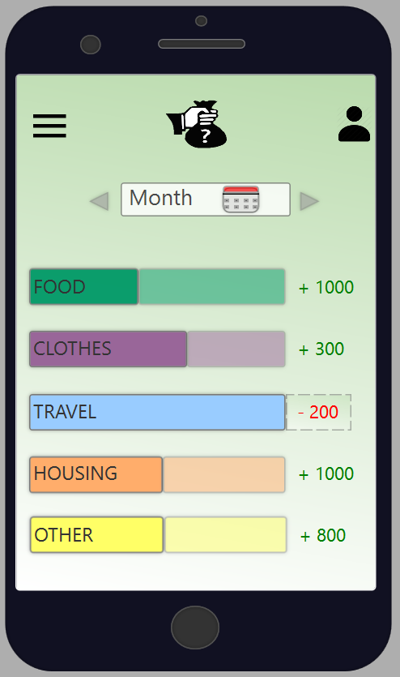

Our solution is to create an application that gives you total control of your economy straight to your smart phone. The application will automatically track all your expenses in your everyday life, by connecting to your bank accounts.
Technical instructions – after downloading the application
Step one
The first time you open the application, you have to log in with your BankID. This is to connect your bank accounts to the application. Then the user has to create a personal password with minimum six characters (letters and numbers), and a touch ID (fingerprint) for those who has this function. The password/touch ID will be used for logging in to the application later.
Step two
Now, the application will collect data from your bank account. Then it will show you a review of your expenses and automatically give you an estimated budget. You can easily change this budget to fit your personal needs.
Step three
You can create more than one profile, by registering different accounts. For example, if you share one account with your husband or wife, you can share your profile, and it will be visible for the both of you.
Safety
If the user has forgotten their password or entered it wrong three times, the user has to log in with the BankID and then change their password.
If the application is idle for five minutes or more, it will automatically log out.
The application does not have the ability to defund from your accounts, it only has access to show you an overview of your transactions.
Content of the app
Home
The application will log the transactions automatically from your credit- or debit card. This makes it easier for the application to track all your card and internet payment transactions, and automatically log that in your budget.
On the front page of the application, you will get a visual overview of your monthly budget. You will get a look on how much you have left to spend in different categories. For example, food, housing, clothes, travel etc. The default setting of the application shows you a monthly budget, but you can choose specific dates you want to view.
The app divides your expenses into different categories, but you can also define your own categories to make it more personal. When you make a payment, the application automatically suggests which category to put the transactions.
When you press one category, like “food”, all of the transactions you made in the chosen time-period that relates to this category, appears. This is in addition to your total budget for the chosen time-period for the selected category. Here, you can add transactions manually, for example, when you pay with cash.
Summary/overview/more/my economy
Compare one month with another month to get a deeper sense of your total consumption.
Choose to have your budget exported and sent to your e-mail in a pdf or excel-format. Here you can get a better overview of your accounting with all the categories.
You can also see your accounts and balances.
The application shows you different tips and tricks for smart economy.
Receipts
In our survey, one of the participants suggests that they should have the possibility to take a picture or QR-code of a receipt, and save it to the app. In that way, you don’t need to keep all your receipts and guaranties in your wallet.
You can divide the receipts into different folders, so it’s easy to have them organized by category.
Settings
Edit your budget-limit for all the categories. You are able to change or add more to the budget limit whenever you want.
You can choose to be notified when you approach your budget limit, for example, when you have 10% or 30% left on your budget.
If you have different accounts, you can divide the accounts into different profiles, or choose to have all shown in only one profile.
If you have some money left at the end of the month, the application will ask you to transfer the leftovers to your savings account or add it to next month’s budget.
